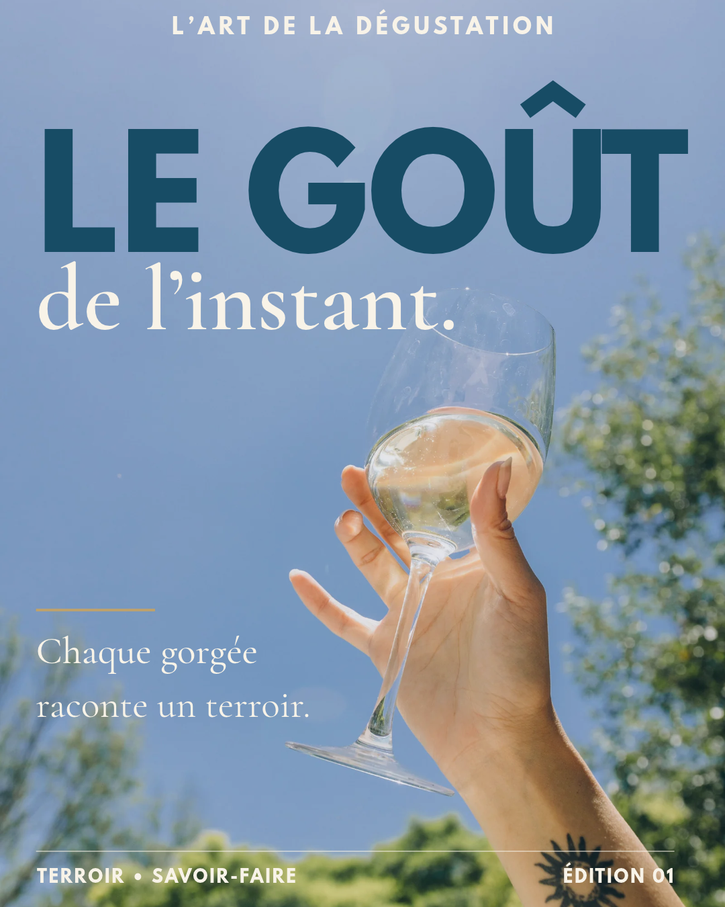

instant_editorial Le goût de l’instant.
Derrière chaque verre, il y a un paysage, des saisons, des gestes précis et un savoir-faire transmis au fil du temps…
Digital marketing professional with nearly 3 years of experience in campaign execution, CRM management, digital communication and marketing analytics. Working in a small marketing team has allowed me to develop a versatile, hands-on profile, combining operational expertise in digital tools with creativity, analytical thinking and project coordination.
Explore my background ↓
I enjoy working at the intersection of marketing, technology and communication. My role in a small marketing team has given me the opportunity to take on a wide range of responsibilities, from creating digital campaigns and visual content to managing CRM data, analysing performance and improving internal processes.
I particularly enjoy learning new tools, solving problems and finding practical ways to make marketing activities more efficient and impactful.
Outside work, I enjoy fitness, skiing, pilates, reading and travelling, as well as creative hobbies such as crochet and knitting.
Marketing Assistant
Junior Real Estate Analyst
Ticketing Operations Assistant
A selection of personal video projects created to explore visual storytelling, content creation and video editing. These examples showcase my creativity and ability to produce engaging digital content using tools such as Canva and CapCut.
A creative video concept exploring animated text, visual transitions and motion graphics to promote wine products.
A promotional video concept combining visuals, transitions and music to create engaging content for social media.
A corporate event invitation video concept combining elegant visuals, smooth transitions and motion graphics to create a sophisticated digital experience.
A selection of self-initiated creative projects exploring art direction, graphic design, visual storytelling and social media communication. These projects reflect my interest in combining marketing strategy with creativity and visual identity.
Graphic Design · Social Media · Wine & Lifestyle
Personal Creative Project | Art Direction & Social Media Design

instant_editorial Le goût de l’instant.
Derrière chaque verre, il y a un paysage, des saisons, des gestes précis et un savoir-faire transmis au fil du temps…
Le Goût de l’Instant is a fictional editorial concept exploring the sensory and cultural dimensions of wine tasting. The project was developed as a self-initiated creative exercise, combining marketing strategy, art direction, graphic design and social media copywriting.
Rather than promoting a specific wine brand or producer, the concept celebrates terroir, craftsmanship and the cultural experience of wine.
Conceptual brief — imagined objectives, not results from a published campaign.
Create an engaging Instagram visual designed to build awareness and encourage audience interaction through an emotional and editorial approach to wine communication.
The concept focuses on storytelling and visual appeal rather than direct product promotion.
Target audience: Adult wine enthusiasts, gastronomy lovers and lifestyle-oriented audiences with an interest in authenticity, culture and craftsmanship.
A contemporary editorial aesthetic combining Mediterranean-inspired colours, sunlit lifestyle photography and expressive typography. The visual direction balances bold graphic elements with refined details to create a premium yet approachable atmosphere.
Sky Blue reflects the softer photographic blue of the final creative. Photograph tones vary; palette values are art-direction references.
LE GOÛT
League Spartan — Boldde l’instant.
Cormorant Garamond — ItalicDerrière chaque verre, il y a un paysage, des saisons, des gestes précis et un savoir-faire transmis au fil du temps.
Déguster un vin, c’est aussi prendre le temps d’observer sa robe, de découvrir ses arômes et d’apprécier l’expression de son terroir.
Une invitation à redécouvrir le vin autrement, entre culture, sensorialité et authenticité.
Et vous, qu’est-ce qui vous fascine le plus dans un vin : son histoire, ses arômes ou son terroir ?
#UniversDuVin #Viticulture #Terroir #ArtDeLaDegustation #CultureDuVin #SavoirFaire
À déguster avec modération.
Tools: Canva Free · AI-assisted creative ideation
Presentation mockup created in HTML/CSS with AI assistance.
Self-initiated conceptual project — No commercial affiliation.
Academic Project | May 2022
As part of a university group project, we developed and implemented a digital advertising campaign for La Cabine, a café in Sion, Switzerland. The project focused on increasing local visibility through Google Ads and Instagram Ads.
Tools: Google Ads · Instagram Ads · Campaign Planning · Performance Analysis
This was a collaborative academic project. The results shown reflect the overall campaign performance.
Academic Consulting Project | 2022
As part of a university group project, we developed a digital marketing strategy for Tout un Canton, a Swiss online platform promoting local products, producers and experiences from the Valais region.
The objective was to assess the brand's existing digital presence, better understand its target audiences and propose actionable recommendations to strengthen its online communication.
Delivered a structured digital marketing strategy with practical recommendations, customer journey analyses and an editorial content plan.
Digital Marketing Strategy · Customer Personas · Customer Journey Mapping · Competitive Benchmarking · Social Media Strategy · Content Planning
Master of Business Administration
Swinburne University of Technology, Melbourne · 2023–2024
Master of Science in Business Administration
HES-SO Lausanne · Entrepreneurship · 2022–2024
Bachelor of Science in Tourism
HES-SO Valais-Wallis · 2019–2022
Microsoft Dynamics 365, Mailchimp, CRM segmentation
GA4, Power BI, Excel, SEMrush
Canva, CapCut, LinkedIn, visual content creation
WordPress, CMS, SEO, Google Business Profile
Generative AI, AI use cases, Zapier
Shopify (academic), API integrations (collaboration), Power Automate (exploration)
French · Native
English · C2, Cambridge Proficiency
German · B2, WiDaF